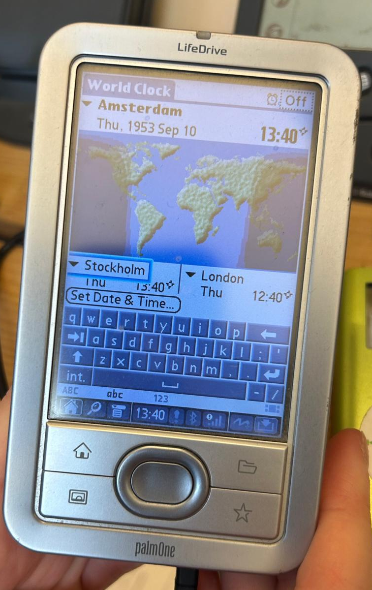

Das Modell ist ein LifeDrive und ist wie ein Minicomputer den man im Alltag verwenden konnte.
palmOne, Inc. (später wieder Palm genannt)
PDA (Personal Digital Assistant) / mobiler Handheld-Computer
Baujahr: 2004
Verkaufsjahr: 2005
Smartphones wie das Apple iPhone
Moderne Android-Smartphones
Der PalmOne LifeDrive wurde hauptsächlich als mobiler Organizer und Arbeitsgerät genutzt. Er diente zur Verwaltung von Terminen, Kontakten und Aufgaben und war damit besonders im beruflichen Alltag hilfreich. Ausserdem konnten E-Mails gelesen und geschrieben sowie Notizen erstellt werden. Durch den grossen Speicher war es möglich, Musik, Fotos und Dokumente mitzunehmen und unterwegs zu nutzen. Dank WLAN konnte man auch drahtlos im Internet surfen. Insgesamt war das Gerät für Büroarbeit, Organisation und einfache Multimedia-Anwendungen gedacht.
Der PalmOne LifeDrive verfügte über eine Touchscreen-Bedienung und eine integrierte 4-GB-Microdrive-Festplatte. Er konnte mit dem Palm OS betrieben werden, das eine Vielzahl von Anwendungen und Diensten zur Verfügung stellte. Die Benutzeroberfläche war intuitiv gestaltet und ermöglichte die einfache Bedienung von Terminen, Kontakten, Notizen und E-Mails. Der LifeDrive war auch mit WLAN ausgestattet, was den drahtlosen Internetzugang ermöglichte.
Der PalmOne LifeDrive war für seine Zeit ein sehr fortschrittliches Gerät. Besonders auffällig war die integrierte 4-GB-Microdrive-Festplatte, die deutlich mehr Speicherplatz bot als viele andere PDAs im Jahr 2004. Dadurch konnten nicht nur Kontakte und Termine gespeichert werden, sondern auch Musik, Fotos und Dokumente. Zudem verfügte das Gerät über WLAN, was damals noch nicht selbstverständlich war, und ermöglichte so den drahtlosen Internetzugang. Insgesamt war der LifeDrive eine Mischung aus Organizer, MP3-Player und mobilem Computer – also eine Art Vorläufer moderner Smartphones.